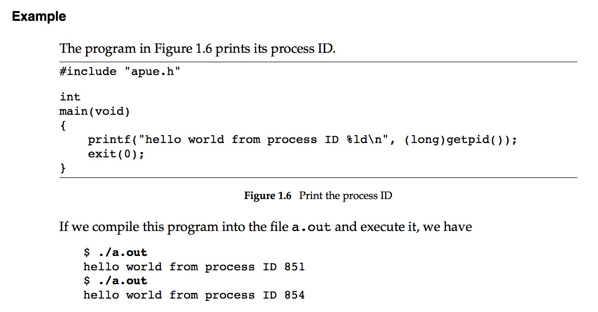
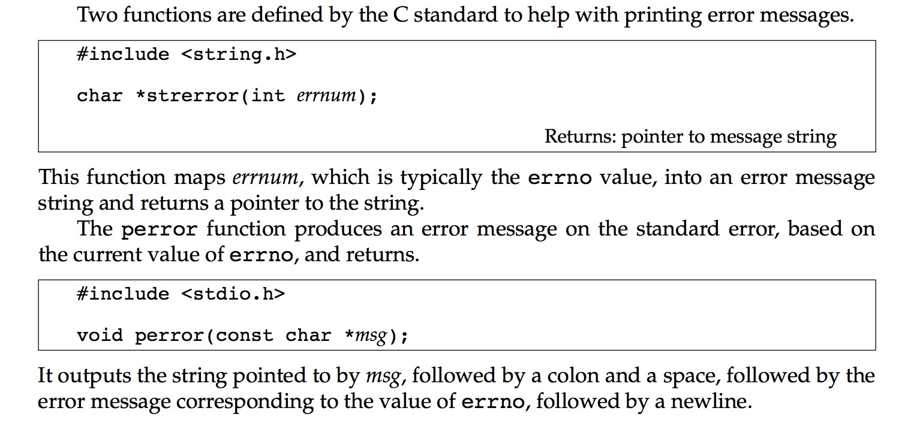

APUE读书笔记-1
闲来无聊，想学习一个，提高一下自身的知识水平，据说Unix方面的神书主要有两本，分别为 Advanced Programming in the Unix Environment 和 Unix network programming 均为W. Richard Stevens所著，那么，闲话不多说，开始读书吧。
第一章
被誉为神书总是有道理的，从第一章就可以看出来，本书的作者显然不像贝尔实验室中的大触们那么高冷，他的语言更加平实，贴近初学者的视角，从而使得书的内容简单易懂。
下面是书后的问题：
1.1 Verify on your system that the directories dot and dot-dot are not the same, except in theroot directory.
这个问题很简单，分别在一个普通目录下执行
ls .和ls..即可看出..为其上级目录，而.为当前目录。而在根目录
/下二者输出内容一致，可见其为相同目录。1.2 In the output from the program in Figure 1.6, what happened to the processes with processIDs 852 and 853?
Fig1.6如下图

可见该程序测试了
getpid()函数的功能，即获取新的不重复的pid(线程ID)，在这里，我们可以发现获取了pid 851之后，获取到的是pid 854，那么根据多进程的理解，此时最合适的解释是其他的程序在两次执行获取pid的./a.out程序之间，1.3 In Section 1.7, the argument to perror is defined with the ISO C attribute const, whereas the integer argument to strerror isn’t defined with this attribute. Why?
两个函数定义如下图

原以为这里有什么高深的地方，大概查了下，发现其实就是基础的
const问题，所以这里来说，由于函数的传参机制是默认按值传递的，所以strerror函数传递的errorno值是原来errorno值的一份拷贝，因此不必进行const定义也可以保证外部的errorno不会被修改，而perror函数则传递的是指针参数，指针本身并不会被修改，但是指针所指向的区域，在没有前置const的修饰的情况下，是可能被函数修改的，因此在这里使用const来保证输入的字符串不被修改。1.4 If the calendar time is stored as a signed 32-bit integer, in which year will it overflow? Howcan we extend the overflow point? Are these strategies compatible with existing applications?
如果使用有符号的32位Int型整数存放时间的话，由于符号位要占用一位，那么可表示的从1970开始的最大秒数为$2^{31} = 2,147,483,648$ ，转换为人类可读的日期即为
GMT: Tuesday, January 19, 2038 3:14:08 AM，而在我朝的话就是GMT+08:00: Tuesday, January 19, 2038 11:14:08 AM，这也是著名的2038年问题，现有系统到2038年时会遇到一次巨大的危机，类似于2000年时千年之交时的千年虫问题，都会导致时间相关的软件系统出现故障。终究这些问题的原因，都是程序员的短视和行业的迅速发展。拿ipv4地址枯竭问题来说，在计算机行业刚刚开始发展的萌芽时期，计算机还都是富贵人家的奢侈品，总体能互相连接的计算机更是屈指可数，有谁能考虑到在将来$2^{32} = 4,294,967,296$个IP地址会不够用呢？回到问题，如果要解决这个2038问题，最简单的方法就是改换为64位的值，这样可以说是一劳永逸，因为这样的话到理论上到
292278994-08-17T07:12:55.807Z才会出现下一次的时间问题，而届时人类是否还存在都是个问题，因此理论上是最佳的方案。然而很多情况下，我们需要与原有程序兼容，因此，改用无符号的32位整数也许是一个好方法，一方面我们很少需要表示1970年以前的时间，所以负的世界值用处不是很大，另一方面如果使用这个方法的话 ，不仅能与现有程序兼容，同时也将时间范围扩展到了
GMT: Sunday, February 7, 2106 6:28:16 AM，给了我们充足的应对时间。1.5 If the process time is stored as a signed 32-bit integer, and if the system counts 100 ticks per second, after how many days will the value overflow?
公式: $2^{31}/(100\times3600\times24) = 248.55$ ，所以大约248天后该值会溢出。